User Interface
Main working areas
The following image describes the main working areas of the AgnosPCB inspection software.
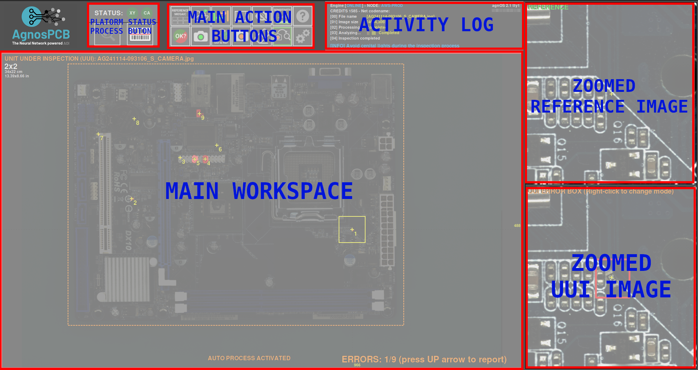
Start inspection

The Inspection start button is located in the upper left corner. A simple click triggers a sequence of actions to inspect the current UUI image. This buttom is available when the Auto process button is set OFF. This is useful to avoid spend credits when you are testing how to take pictures of your PCBAs.
Activity log
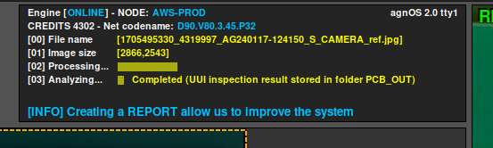
The activity log area is located in the top right side and shows the current avaible credits and application's operational details. This log serves as a guide, offering clarity and insights into the application's functionality and performance.
Main workspace

This is the main section where you work with the images, whether it's the REFERENCE or the UUI..
Side-by-side comparison
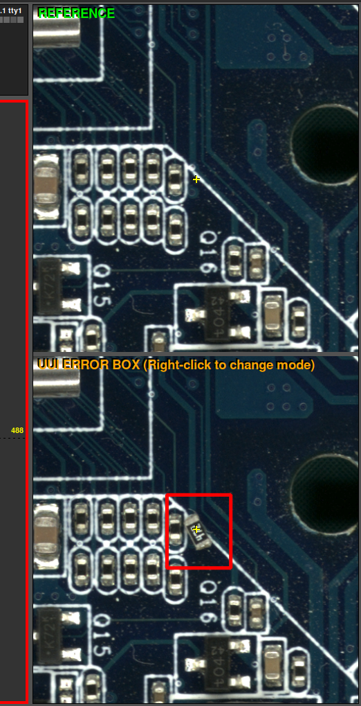
This interface section, is divided in two parts. The first displays the REFERENCE image, serving as a standard for comparison, while the second part shows the UUI image. These images are maginified and move in parallel showing exactly the same area in the REFERENCE and UUI where the cursor is pointing in the main workspace.
Buttons panel

Here are located various buttons and options. They're designed to optimize your workflow and speed up your tasks.
Reference mosaic
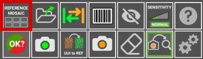

The reference mosaic is used to store REFERENCES as files to quickly find and load any fo them. The mosaic menu automatically appears after taking a REFERENCE by using the software with the take REFERENCE photo button or by loading it with as a file. A REFERENCE stored in the mosaic can be quickly loaded by pressing a F button (F1-F10).
LOAD REFERENCE as file
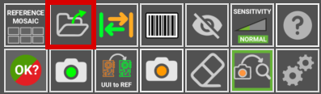

Use this icon to load a image previously captured as a REFERENCE. All the REFERENCE images can be found inside the folder APP/REFERENCE in a folder named after the time the picture was taken.
Note
Since version 7, the software does not allows to load images taken from any source other than the platform itself as the images contains specific parametres for the optics.
Swap
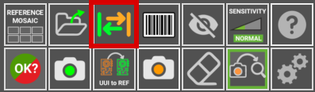
Toggles between REFERENCE and UUI images in the main workspace area.
Barcode area drawing

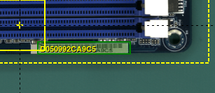
Click this button to manually draw a rectangle in the REFERENCE image where there is a barcode. The software will read it and use that code to name the images and include it in the final PDF report.
Exclusion


Creates an exclusion area where the system will not look for faults. You can create as many areas as required. This function is detailed in the following section.
Sensitivity

Change the system fault detection sensitivity (NORMAL/HIGH/VERY HIGH). Set back to normal, automatically after carrying out a new inspection. Shortcut: 1, 2 ,3 Keys
Help

This button will get you to this USER GUIDE
Report

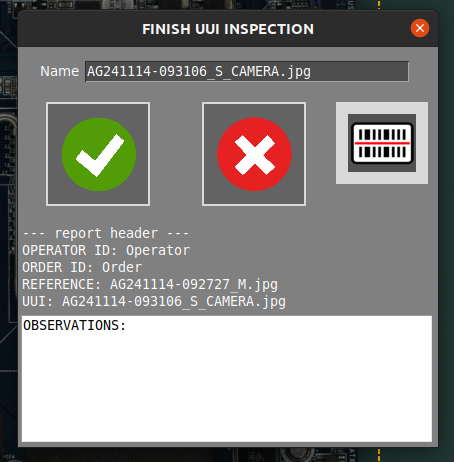
Selecting this button will create a report that includes the detected errors. This report could be tagged as an OK or NOT OK inspection, depending on the manufacturing criteria. To learn more about this feature go to the following section.
Take REFERENCE photo
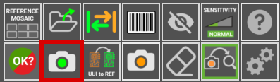
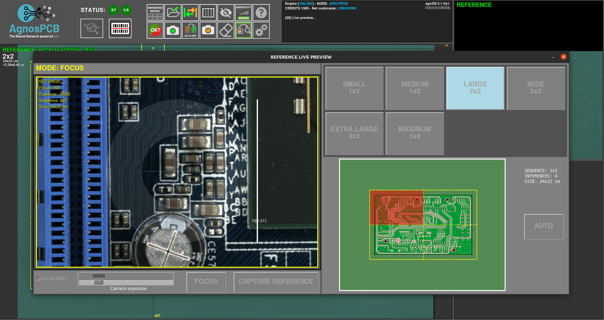
This button open a window with the utils to generate a REFERENCE image from a PCB or panel. In generate a reference section you will learn more about this function.
Shortcut: r
UUI to REFERENCE

This function turns the current UUI image in a REFERENCE. This is useful when some of the components of the PCBA has been changed for a equivalent and the Neural Network detects it as an error due to a visual difference but the PCBA is correct. To learn more about this feature go to the following section.
Take an UUI photo


Takes a photo of a Unit Under Inspection PCBA/Panel. If the auto process button is active, the inspection will start automatically once the UUI image is taken.
Shortcut: s
Eraser

Deletes a drawn exclusion area.
Auto process

If activated, the next UUI photo taken will be automatically processed. That means that the image will be analyzed for faults right after being taken. This option reduces the processing time for every inspection.
Important
For ONLINE UNITS please note that each processed image will automatically be sent to our server and will consume credits. If you are testing how to take your photos we recommend to disable this function until you are sure the photos are good enough in order to avoid spending credits unnecessarily.
Settings
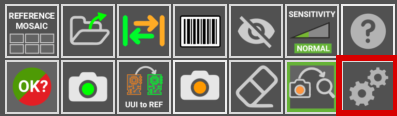
With this button you can change other functions to suit your needs.